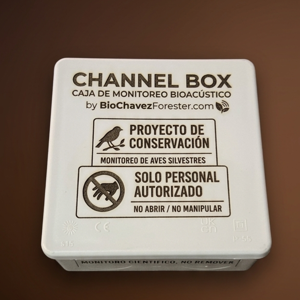

Nuestros Desarrollos
CHANNEL
Identificación automática de fauna mediante sonido. Procesa grabaciones masivas, genera espectrogramas y calcula biodiversidad acústica con el motor de IA DeepBio-Acoustics by BCF.

PRÓXIMAMENTECHANNEL BOX
Nuestra primera grabadora de aves. Diseñada para capturar paisajes sonoros con alta fidelidad y autonomía extendida.
FORXIME PRO
El cerebro de tus cámaras trampa. Identifica fauna con IA, extrae metadatos automáticamente y obtén análisis científicos detallados en segundos.
ECOMETRICS
La solución definitiva para automatizar el diseño experimental, el cálculo de carbono, biomasa y el análisis de correlación de variables.
FORXIME
La base del fototrampeo moderno. Herramienta de acceso abierto diseñada para optimizar los cálculos esenciales en estudios de fauna silvestre.